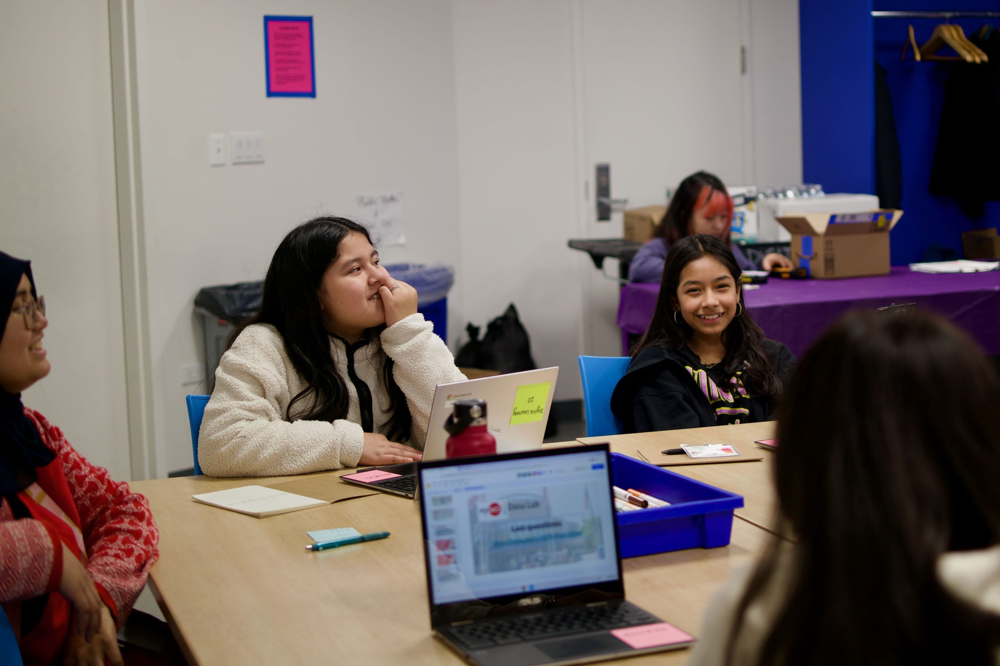
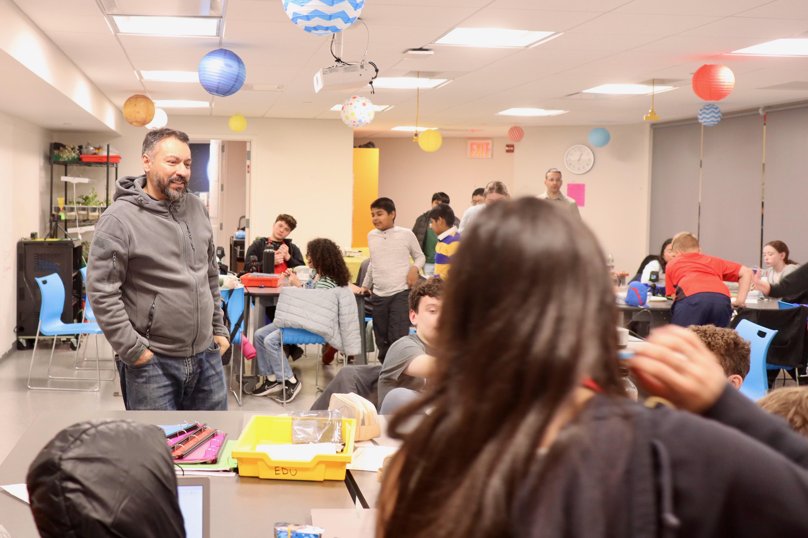
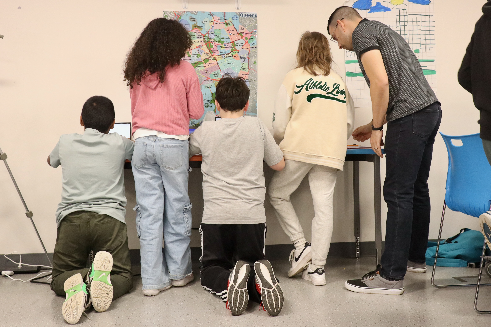

Developing an Assessment of Informal Data Science Learning
Two Cycles of Development, Implementation, and Revision
Welcome and Introduction

The Growing Need for Data Science Assessment
Data science concepts are increasingly integrated into K-12 and informal learning curricula.
The Assessment Challenge
Effective assessments are crucial for understanding student learning in data science.
The Problem: * Existing assessments often don’t fit the unique goals and settings of informal learning environments. * There is no widely adopted measure specifically for informal data science learning.
Our Goal: To develop and validate an assessment tailored to these contexts.
Background
Our Focus: Data Science Learning
We focus on key data science practices, particularly: * Posing meaningful questions. * Considering how data can be used to answer those questions.

Our Approach: Constructing Measures
We are using a principled assessment design framework (“Constructing Measures”) to guide our development process.

Tailoring to Informal Contexts
Adapting assessment for informal settings (like summer camps) involves:
- Using relatable scenarios (“question skeletons”, interest surveys).
- Focusing the construct map on learning achievable in short timeframes.
- Designing for potential collective reflection (possibly aided by ML).
- Creating adaptable tools for other educators/researchers.
Presentation Purpose
- Share mid-project progress on our assessment development.
- Detail two major development cycles (Version 1 -> Version 2) for one key construct: Formulating Questions.
- Offer insights and resources for others assessing informal DS learning.
Key Assessment Design Considerations
- Short Duration: What learning gains are realistic in a 5-day program? Expect change in broader constructs, not necessarily all sub-skills.
- Construct Granularity: Targeting higher-order abilities vs. specific skills.
- Item Types: Balancing tasks focused on constructing questions vs. critiquing them. (Noticed more growth in critique).
- Use Case: Potential for both summative (pre/post) and formative (within-item analysis) application.
- Relevance: Ensuring scenarios resonate with learners’ perspectives.
Findings: Version 1
Version 1: Construct Map – Framing Problems
Focal Criteria for Evaluating Questions:
- Feasibility: Considers time, scope, resources, expertise.
- Relevance: Has personal or sociopolitical value.
- Variability: Requires data; answer isn’t a simple lookup fact.
| Level | Student Demonstrated Ability |
|---|---|
| 1 | Does not consider any criteria. |
| 2 | Evaluates a question based on one criterion. |
| 3 | Evaluates a question based on two criteria. |
| 4 | Evaluates a question based on all three criteria. |
Version 1: Item Examples

Scenario: Imagine you’d like to study the Pokémon universe. For each question below, decide whether you could use (or collect) a data set to answer it.
Example Multiple Choice Item:
- When was the Pokémon game first created?
(Other MC examples: What do kids learn…?; How has price changed…?; Is Pikachu most popular…?)
Example Open-Ended Item:
- If you were going to study the Pokemon universe, what’s a question you could answer by using or collecting a data set?
Version 1: Findings & Challenges
- Implementation: Used across three camps (Versions 1a-1c) with minor tweaks.
- Observation: Detected minimal change pre/post camp.
- Validity Concerns: How much signal (actual learning) vs. noise were we capturing?
- Challenge: Rich constructs may not be well-captured by simple items (MC).
- Challenge: Short timeframe limits expected observable change.
- Challenge: Avoiding a high-stakes “test” feel (“Not an SAT!”).
- Challenge: No single “right” answer for feasibility/relevance criteria.
- Challenge: Diverse student interpretations of “data-driven” questions.
- Key Takeaway & Revision Driver: Need to shift focus from simple answers to capturing student reasoning via richer, open-ended items.
Findings: Version 2
Version 2: Development Process
- Revision Rationale: Based on V1 findings, shifted primarily to open-ended items requiring explanation.
- Expert Review (V2a): Refined construct map and items based on expert feedback.
- Pilot Implementation (V2b): Piloted revised assessment in a summer camp. Currently analyzing initial data.
- Next Steps (V2c): Plan broader data collection in camps and classrooms (MS/HS) to gather validity evidence.
- Dissemination Goal: Share construct maps, items, process, and validity/reliability evidence.
Version 2: Construct Map - Formulating Questions
We consider Formulating Questions to involve three key elements. Students formulate questions exhibiting:
- Importance: Concerns personal, professional, or sociopolitical interests.
- Data-driven: Involves collecting/analyzing multiple observations/data types to learn about the world.
- Feasibility: Demonstrates consideration for time, scope, resources, expertise, access, funding.
Levels of Data Thinking (Basis for Scoring Rubric)
- Level 0: Non-response or off-topic.
- Level 1: Views “data is everywhere”; asks phenomenological/mechanistic questions (“Why do trees fall?”).
- Level 2: Views data as any number/quantity, including single facts (“How many miles of track?”).
- Level 3: Considers data as repeated measures (“How many people at each stop?”).
- Level 4: Views data as repeated measures used for modeling/description (“How many people on a typical workday?”).
Version 2: Item Example 1 (Constructing)
Scenario: Jake’s social studies class is studying transportation. He has 15 weeks for a project. He wonders why NYC has so much car traffic despite its large subway system.
Criteria Reminder: A good research question should be: * Relevant (matters to him/community) * Data‑driven (needs multiple observations/data types) * Possible (feasible given resources, time, access)
Prompt: Write a research question for Jake that meets these criteria.
Version 2: Item Example 2 (Evaluating - Part A)
Scenario: Ava is curious about student safety walking to school. She asks: “How many cars honked at students walking to school today?”
Criteria Reminder: A strong research question must be: * Relevant * Data‑driven * Possible
Prompt: Is Ava’s question a strong research question based on these criteria?
Version 2: Item Example 2 (Evaluating - Part B)
If you answered “Yes”
Explain why the question “How many cars honked at students walking to school today?” is strong. Reference the three criteria (Relevant, Data‑driven, Possible) in your explanation.
If you answered “No”
Explain why the question is not strong. Then, suggest a revised question for Ava that is relevant, data‑driven, and possible. Remember the criteria (Relevant, Data‑driven, Possible).
Discussion
Development Process: Reflections
Challenges Encountered:
- Articulating constructs precisely before having rich student response data.
- Developing reliable scoring guides for complex open-ended responses (“bootstrapping” the rubric).
- Logistics of scoring large numbers (large n) of qualitative responses efficiently.
- Determining appropriate rigor (“good enough”) for assessment within dynamic informal contexts.
Key Successes:
- Collaborative framework (building on Lee et al.) fostered team alignment on focus.
- Adhering to the “Constructing Measures” approach provided valuable structure.
- Identifying an effective digital platform for administration and data collection.
- Successfully balancing assessment design principles with responsiveness to learners and context.
Looking Forward

Future Directions & Goals
- Analysis & Validation (V2c): Collect data from ~100-200 participants (camps, MS/HS classrooms). Analyze for construct validity and inter-rater reliability.
- Dissemination: Share findings, construct maps, items, process, and validity/reliability evidence via publications, presentations, and open resources.
- Efficiency: Explore Machine Learning (ML) to support or automate scoring of open-ended responses.
- New Applications: Investigate assessment use for measuring teacher learning in data science (often teachers have less DS content knowledge than in traditional subjects).
Potential Future Work
- Refine existing items or expand assessment to other data science constructs (e.g., data analysis, interpretation within the Lee et al. frame).
- Adapt assessment for different informal/formal contexts or age groups.
- Explicitly connect assessment design and findings to national frameworks (e.g., NASEM reports on data science education).
Conclusion
Thank you!
Contact:
- Cody Pritchard – cpritc12@vols.utk.edu
- Leah Rosenbaum – leah@tltlab.org
- Joshua Rosenberg – jrosenb8@utk.edu
- Paulo Blikstein – paulob@tc.columbia.edu
This material is based upon work supported by the National Science Foundation under Grant No. 2314089. Any opinions, findings, and conclusions or recommendations expressed in this material are those of the author(s) and do not necessarily reflect the views of the National Science Foundation.